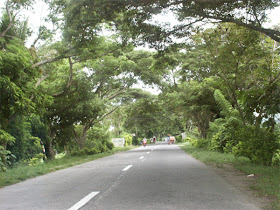

Bulan
is a 1st class municipality in Sorsogon Province, Philippines. According to the 2007 census, it has a population of 91,730 inhabitants.

A coastal municipality in Sorsogon Province, Philippines
Bulan is a 1st class municipality in Sorsogon Province, Philippines with a vibrant culture, growing economy, and striking coastal scenery.

is a 1st class municipality in Sorsogon Province, Philippines. According to the 2007 census, it has a population of 91,730 inhabitants.
The Municipality of Bulan is strategically located at the southwestern most tip of the island of Luzon and is a premier town in the Province of Sorsogon. It has an area of exactly 20,094 hectares and is the terminal and burgeoning center of trade and commerce of its neighboring towns. It comprises fifty-five (55) barangays and eight (8) zones and is populated by people of diversified origin. This municipality is bounded on the North by the Municipality of Magallanes, on the East by the municipalities of Juban and Irosin, on the South by the Municipality of Matnog and on the West by Ticao Pass. It has a distance of 667 kilometers from Manila, 63 kilometers from the province's capital Sorsogon City, 20 kilometers from the town of Irosin, Sorsogon and 30 kilometers from the town of Matnog.
Residents of Bulan are looking forward to cityhood because of rapid economic growth. The municipality is recognized as one of the richest towns in the province and among the top municipalities in the Bicol Region, with an average annual income of Php 58.8M. Major exports include coastal fisheries, rice, copra, and abaca fiber. Revenues also come from the fishing port, local businesses, and financial institutions such as Allied Bank and Rural Bank of San Jacinto, Masbate, as well as lending companies like Intertrade, GSAC, and PALFSI.